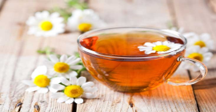

Chamomile Tea
Chamomile tea is most commonly known for its calming effects and is frequently used as a sleep aid. Two studies have examined the effects of chamomile tea or extract on sleep problems in humans. In one study of 80 postpartum women experiencing sleep issues, drinking chamomile tea for two weeks led to improved sleep quality and fewer symptoms of depression.